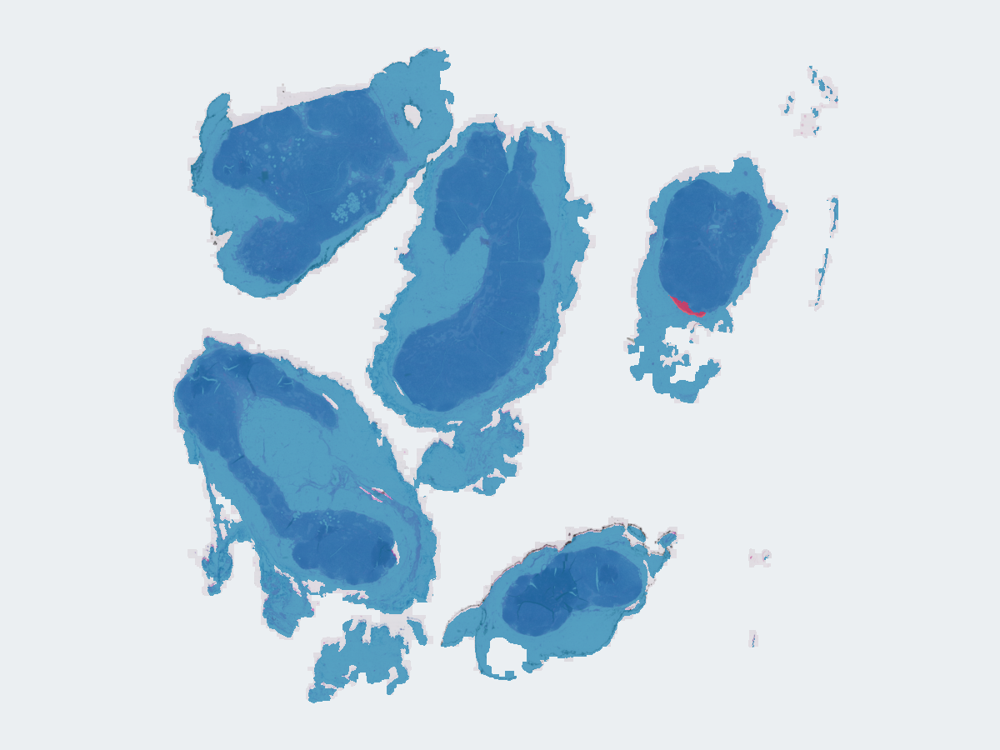
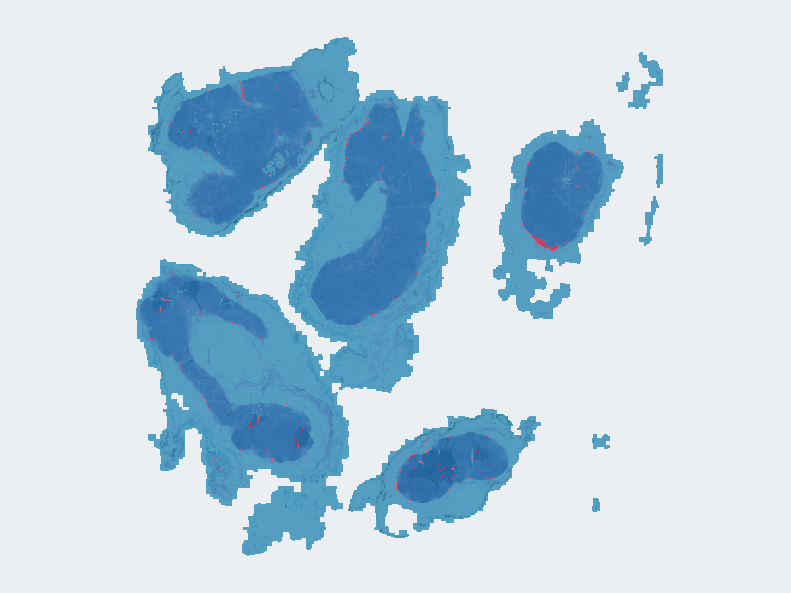
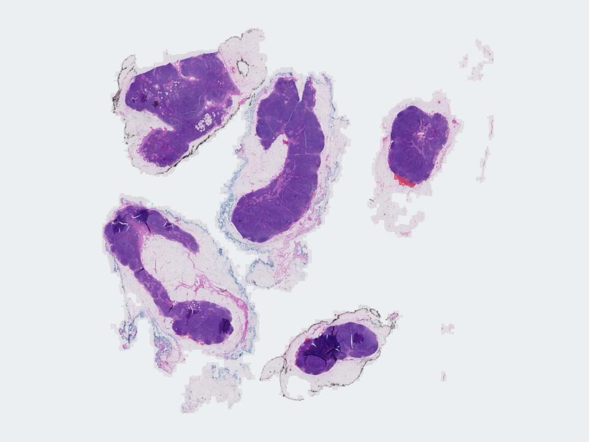
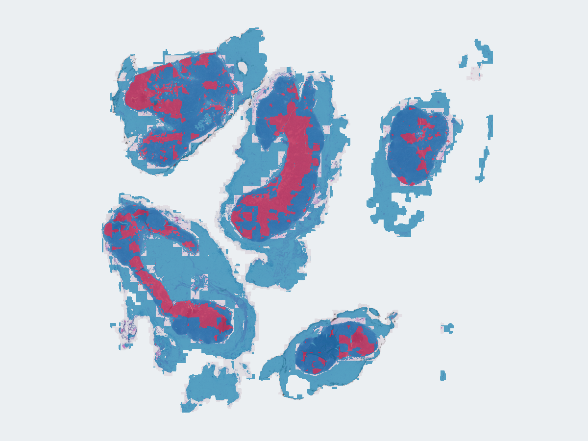
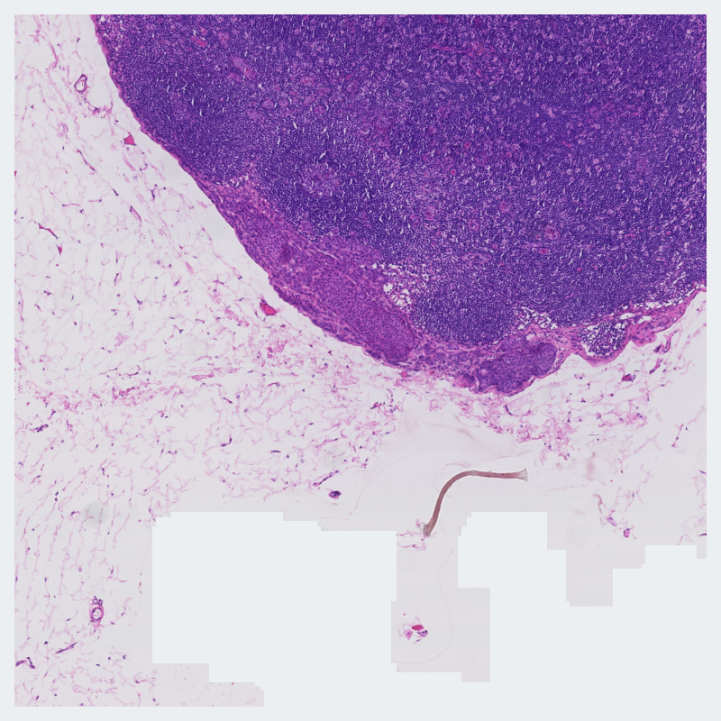
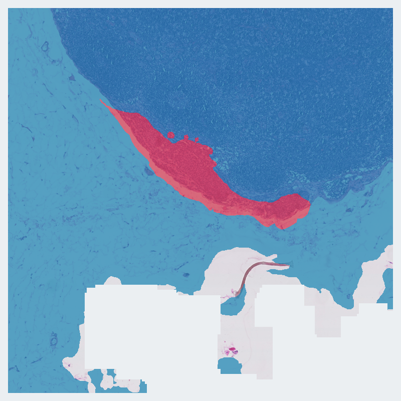
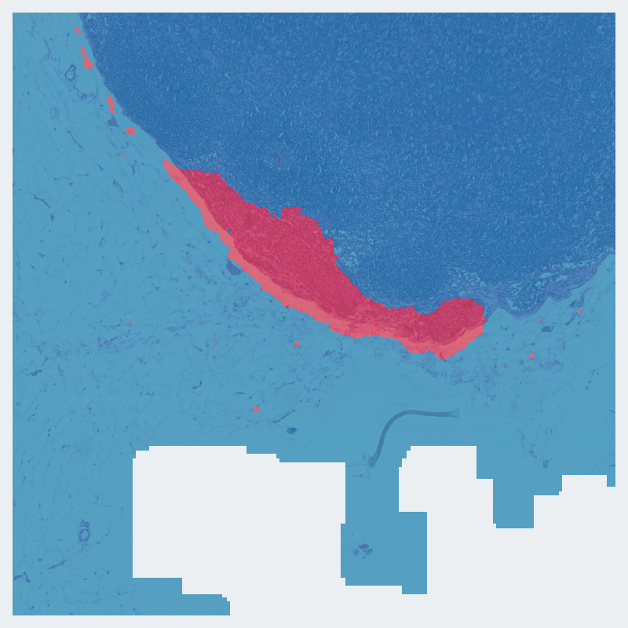
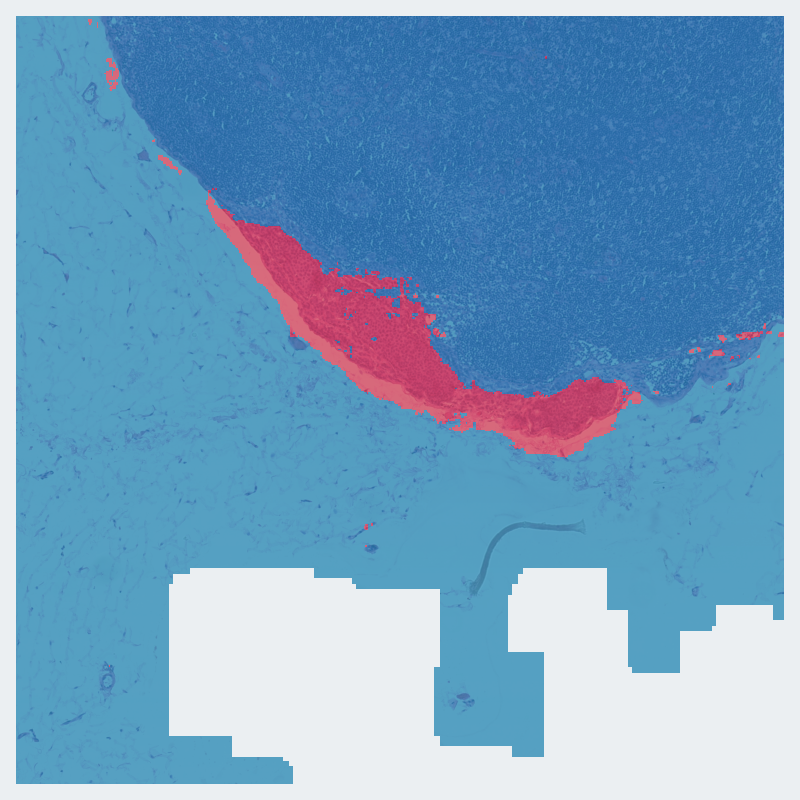
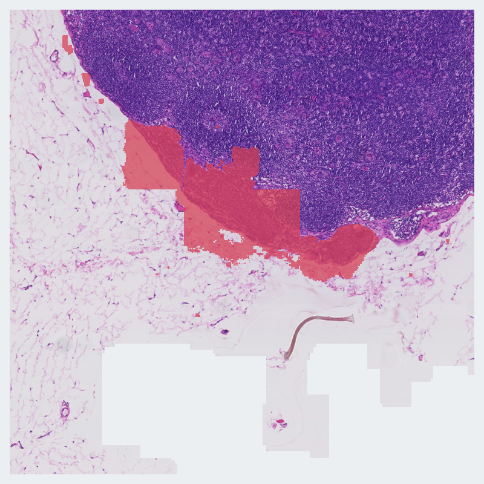
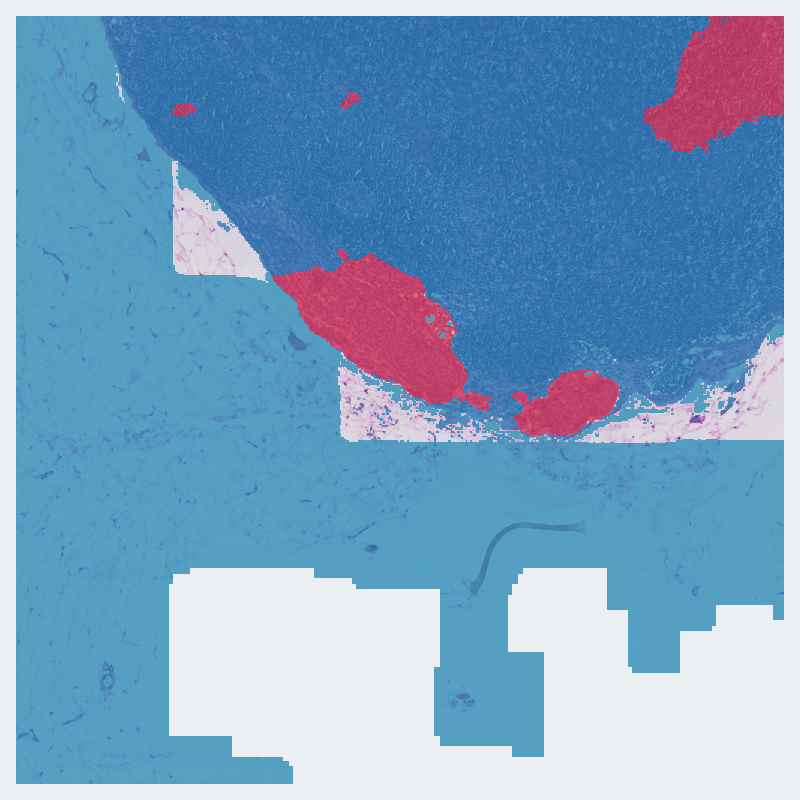

Expert annotation and method outputs
This is the sole CAMELYON16 fitting slide. The panels are an in-sample visual check, not a held-out test or a quality score. All images use the same 4 µm comparison grid, tissue frame and H&E-only tissue boundary. The official expert labels were sampled for this display; the original aligned mask was used for fitting.
Blue means expert nonmetastatic tissue in the reference, or class 1 in U-Net and DeepLabV3+. Coral means expert metastasis in the reference, or predicted class 2 in those networks. MedSAM shows prompted regions only, using boxes from the tumor_093-only U-Net; its uncolored tissue is not a nonmetastatic prediction. VISTA-PATH uses its released generic tumor prompt: coral is that generic tumor class and blue groups its other classes. Its output is not a metastasis-specific fit.
Full tissue context




Expert-annotated region · matched detail
The detail frame was chosen from the fitting slide’s expert metastatic annotation. Every method uses the identical frame.






The interactive GeoJSON below contains the simplified expert annotation. These image panels are previews of verified masks, not a numerical comparison of methods on a test slide.
Inspect the simplified GeoJSON
The official expert annotation marks metastatic and nonmetastatic tissue on this fitting slide. Uncolored areas have no official known-pixel label. These overview polygons are for inspection, not the training or scoring raster.
Interactive inspection is loading. Download the simplified expert-annotation GeoJSON.